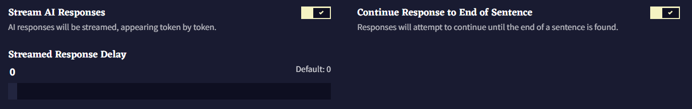
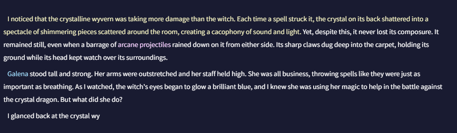
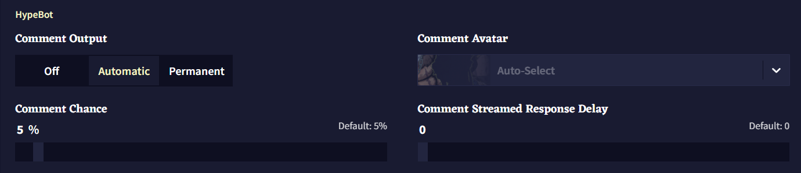
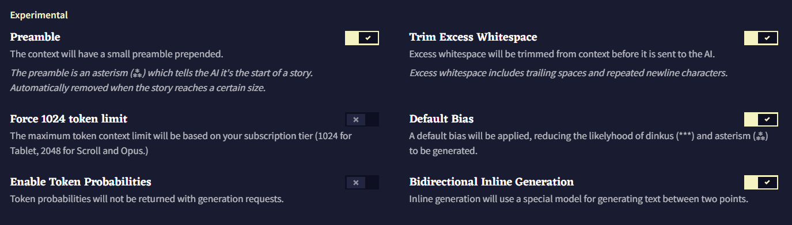
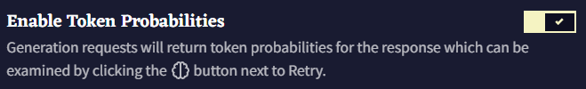
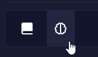
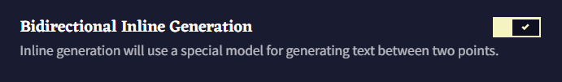

AI Settings
AI Settings 탭에는 여러 가지의 중요한 옵션과 외관을 담당하는 옵션이 있습니다: 텍스트 스트리밍, 문장 다듬기, 이야기에 재미있는 의견을 하게 설계된 해설 동반자인 HypeBot! 토큰 확률 표시와 강조, 문맥 길이 등의 실험적인 기능은 Experimental 섹션에서 사용할 수 있습니다.

AI Responses

AI response 섹션에서는 토큰 스트리밍과 문장 다듬기 옵션이 있습니다. 이 설정들은 가독성 향상을 위해 기본적으로 활성화되어 있습니다.
Stream AI Responses
Stream AI Responses을 켜면 한번에 글이 나타나는 것이 아니라, 글이 생성될 때마다 토큰 단위로 화면에 나타납니다. 아래의 Streamed Response Delay 슬라이더는 얼마나 빨리 텍스트가 스트리밍되는지를 조절할 수 있으며, 낮을 수록 빠른 속도를 나타냅니다.

Continue Response to End of Sentence
해당 토글을 비활성화하면 AI는 사용자가 설정한 Output Length에 도달할 때까지 글을 생성합니다. 이러면 문장 중간에 글 생성이 끝나는 결과가 발생할 수도 있습니다. 이 옵션을 켜면 온점이나 문장을 종료하는 다른 구두점에서 출력이 끝납니다.
HypeBot

Comment Output
Automatic 설정은 Comment Chance 확률에 의해 트리거될 때만 HypeBot이 나타나고 다른 출력이 생성되면 사라집니다. Comment Output을 Permanent로 설정하면 HypeBot이 항상 화면에 남아있습니다.
Comment Avatar
드롭다운 메뉴에서 NovelAI의 여러 캐릭터들을 고를 수도 있고, Theme 탭의 고급 옵션에서 자신만의 아바타를 설정할 수도 있습니다.
Goose tip:

Comment Chance
이 슬라이더는 얼마나 자주 HypeBot이 나와서 이야기할 지를 결정합니다. Comment Output이 permanent로 설정되어 있다면 HypeBot이 이전에 생성한 응답은 사라질 겁니다. 슬라이더를 0으로 설정하면 HypeBot을 끈 것과 같지만, 슬라이더를 100으로 설정하면 각각의 출력에 대한 HypeBot의 응답이 생성됩니다.
Comment Streamed Response Delay
AI response 섹션의 Delay 슬라이더와 마찬가지로, 이 슬라이더는 얼마나 빨리 HypeBot 텍스트가 스트리밍되는지를 결정합니다.
Experimental

Experimental 섹션에서는 Token Probabilities처럼 글 생성에 대한 깊은 고찰을 하게 해주는 설정 뿐만 아니라 AI 출력에 영향을 미치고 AI가 스토리를 생성하는 방향을 유도하는 설정이 있습니다. 이 섹션의 기능들은 완료된 것이 아니며 장래에 크게 변할 수도 있습니다만 그렇다고 해서 이 부분을 확인하는 것을 멈춰서는 안됩니다!

설명에 나온대로 Preamble은 컨텐스트 상단에 asterism (⁂)을 추가합니다. 이는 AI에게 이야기의 시작을 알리는 서식 지정 방법입니다.

Trim Excess Whitespace 토글은 컨텍스트의 후행 공백과 반복되는 줄 바꿈을 제거합니다. 이것들은 AI의 생성에 문제를 일으킬 수 있기 때문입니다.

사용자의 구독 등급에 따라(Tablet에선 1024, Scroll과 Opus에선 2048) Force 1024 token limit 토글을 통해 컨텍스트 사이즈를 1024 토큰과 2048 토큰 간 전환할 수 있습니다. AI가 최근의 문맥과 행동에 더욱 집중하게 만들고 싶거나 낮은 구독 티어에 대한 이야기나 프롬프트를 작성하고 있다면 작은 컨텍스트 사이즈가 이득이 될 수도 있습니다.

Default Bias 토글을 켜면, dinkus (***)와 asterism (⁂) 문자가 나타날 가능성을 줄이기 위해 -0.12의 바이어스가 적용됩니다. 결과적으로 스토리 중단이 줄어들고 스토리의 흐름이 길어집니다.

Enable Token Probabilities 토글을 체크하면 출력을 생성한 후, Editor 화면 하단의 Retry 버튼 근처에 아이콘이 나타납니다. (Editor V2를 사용하고 있다면  Lorebook 아이콘)
Lorebook 아이콘)
해당 아이콘을 클릭하면 Token Probabilities 창이 열립니다. 해당 창에서는 최근 생성에 대한 분석을 볼 수 있습니다. 토큰 또는 토큰 ID를 선택하면 각 토큰이 선택될 확률을 볼 수 있습니다.

|
 |


Editor V2나 inline generation hotkeys (Shift + Ctrl + Enter/ Shift + Command + Enter) 를 사용할 때, Bidirectional Inline Generation 토글은 Default 탭에서 사용자가 선택한 기본 모델을 사용할 지, 양방향을 모두 고려하여 글을 생성하는 특수한 모델을 사용할 지를 전환합니다.

Editor V2가 활성화되었다면, 해당 체크박스는 Editor 윈도우에서 가장 최근의 출력 token probabilities을 강조합니다. 사용된 색상은 Context Viewer나 Logical Probability Viewer와 같으며 Theme 탭에서 설정한 색을 사용하여 토큰 확률에 따라 색으로 구분됩니다.